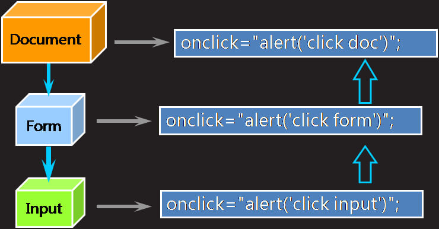

WebBaisc
HTML
- <head>
- <meta>
- 把content属性关联到一个名称:
<meta name="属性的值" content="具体的参数值">
- 把content属性关联到HTTP头部:
<meta http-equiv="属性的值" content="参数变量值">
例：<meta http-equiv="content-type" content="text/html; charset=utf-8"/>
<meta charset="utf-8">" （作用同上）
- <base href="为页面所有链接规定默认基准URL" target="..."> 必须位于head元素内部
-
- 列表
- 列表类型元素<ul>和<ol>中只能包含列表项元素<li>
- <dl> <dt> <dd>
- 分区
- 块分区元素：<div>
- 行内分区元素：<span>
- 元素的显示方式
- 块级元素：可设宽高、独占一行、从上至下 h#,p,ol,ul,li,div,table,form,hn
用来包含块级元素、行内元素和文本
- 行内元素：没有宽高、不会换行、从左至右 span,b,strong,i,em,u,del,a,lable
只能包含行内元素和文本
- 行内块： 可设宽高、不会换行、从左至右 img,input,select,textarea
- 行内元素
- <abbr title="People's Republic of China">PRC<abbr>
- <em>: 定义着重文字 - <i>
- <strong>: 定义加重文字 - <b>
- <del>: 定义带删除线的文字（可变元素）
- <small>: 定义注释（小型文本）
- <mark>: 定义高亮文本
- <blockquote>: 文本加双引号，并且换行，有自己的空间（块元素）
- <q>: 文本加双引号，不换行
- <sub>: 下标
- <sup>: 上标
- <span>: 用作文本的容器，当与CSS一同使用时，可用于为文本设置样式属性
- 空格折叠： 多个空格、制表符、换行符会压缩成单个空格
实体引用
- 图像
- <img src="URL" alt="替代文本" ismap="ismap" usemap="#mapname"/>
- ismap: 点击的坐标会以URL查询字符串的形式发送到服务器
- usemap: 带有可点击区域的图像映射
<map name="mapname">
<area shape="形状" coords="坐标" href="目标URL">
<map>
- 超链接
- <a href="链接URL" target="_blank/_self">达内</a>
- 设置锚点：
- <a name="anchor_name">锚点</a>
- <a href="#anchor_name">回到锚点</a>
- 表格
- <table border="1" cellpadding="2">...</table> 规定单元边沿与其内容之间的空白
- <table border="1" cellspacing="2">...</table> 规定单元格之间的空间
- <table/tr/td align="right">...</...> 规定表格/行/单元格相对于周围元素的水平对齐方式
- <tr/td valign="bottom">...</tr/td> 规定表格行/单元格中内容的垂直排列方式
- <td rowspan/colspan="2">...</td> 跨行/跨列
- <caption>:表格标题 <thead>:表头 <th>:表头单元格 <tfoot>:表脚
-
- 表单
- <form action="表单提交的URL" method="get/post（如何发送表单数据）"
enctype="表单数据进行编码的方式 onsubmit="SomeJavaScriptCode"">...</form>
- 表单控件
- input元素
- 1.文本框：账号：<input type="text" value="输入的文本" maxlength="字符数"
required="required" placeholder="提示信息" readonly/>
- 2.密码框：密码：<input type="password"/> 属性同上
- 3.单选框：性别：<input type="radio" name="sex" value="男" checked/>男
name属性用于实现分组; 被选中的选项，value的值就被发送到服务器
- 4.复选框：<input type="checkbox" checked/>美食... 属性同上
- 5.隐藏域：<input type="hidden" value="love"/>
- 6.文本选择框：文件：<input type="file"/> 选择要上传的文件
- 7/8/9.提交、重置、普通按钮：<input type="submit/reset/button" value="按钮名"/>
- 10.图像提交按钮：<input type="image" src="URL">
- ......
- <input id="myCar" list="cars"/>
<datalist id="cars"> 定义选项列表，与input元素配合使用，来定义input可能的值
<option value="BMW" lable="宝马">
<option value="Ford" lable="福特">
</datalist>
- 其它元素
- 1.标签：关联后点击标签等同于点击控件
- <input type="checkbox" id="控件ID"/>
- <label for="控件ID">我已阅读并自愿遵守此协议！</label>
- 2.文本域：<textarea cols="列数" rows="行数" readonly>文本</textarea>
- 3.下拉选：<select><option selected>文本1</option><option>文本2...</select>
- 组合标签
- <col/colgroup span="列数" style="..."/> 对列组合，以便格式化
<hgroup> 对标题组合
<h1>...</h1>
......
</hgroup>
<nav> 定义导航链接
<a href="URL">text</a>
......
</nav>
<fieldset> 对表单中的元素组合，并在周围绘制边框
<legend>标题</legend>
...<input ...>
......
</fieldset>
<optgroup label="标注"/> 对选项组合
<option...
......
</optgroup>
- 其它标签
<audio src="URL" controls="controls" autoplay="autoplay" loop="loop"> 音频
您的浏览器不支持audio标签
</audio>
<video src="URL" controls="controls" autoplay="autoplay" loop="loop"> 视频
您的浏览器不支持video标签
</video>
- <embed src="URL" type="..." height="..." width="..."/> 嵌入
<details open="open"> 细节
<summary>标题</summary>
......
</details>
<figure> 流内容（图像、图表、照片、代码等）
<figcaption>标题</figcaption>
...<img src="url">
</figure>
- <hr/> 创建一条水平分割线
- <iframe src="URL"/></iframe> 创建包含另一个文档的行内框架
- <noscript>text<noscript> 浏览器如不支持JavaScript，将显示文本内容
- <wbr> 规定在文本中的何处适合添加换行符
<menu> 定义一个菜单列表
<li>html</li>
<li>xhtml</li>
</menu>
<object
<param
CSS
- 外部样式表
- <link rel="stylesheet" type="text/css" href="notes.css">
- CSS规则特性
- 继承性：父CSS被子继承，如字体、颜色等
- 层叠性：同一元素，不冲突的CSS可叠加
- 优先级：同一元素，冲突的CSS以优先级高为准
- 浏览器缺省设置（低）
- 外部样式表或者内部样式表
- 内联样式（高）
- PS:同等优先级下，以最后定义的样式为准
- CSS选择器
- 元素选择器：body{}
- 类选择器：.div-a{}
- id选择器：#d1{}
- 选择器组：.div-a, #d1{}
- 派生选择器:
- 后代选择器：body .div-a{}
- 子选择器:body>.div-a{}
- 伪类选择器:
- 选择访问过的超链接：a:link{}
- 选择未访问过的超链接：a:visited{}
- 选择激活态(正在点)的按钮：.btn:active{}
- 选择悬停态(鼠标位于正上方)的图片：img:hover{}
- 选择有焦点(光标)的框：.txt:focus{}
- border & box
- border
- border: width值 style值 color值
- overflow: auto/scroll/inherit 规定当内容溢出元素框如何处理;
- border-collapse: collapse/inherit 设置表格的边框是否被合并为单一的边框
- box
- padding: 上 右 下 左;
- margin: 10px auto;
- 背景
- background: color值 imgURL repeat-x/no-repeat center;
- background-position: 改变背景图片在元素中的位置
- background-attachment: fixed 设置背景图像是否固定或随着页面滚动
- 文本格式化
- 控制文本
- 指定字体：font-family: value1,value2...
- 字体大小：font-size:
- 字体加粗：font-weight: normal/bold
- 控制文本格式
- 文本颜色：color:
- 文本排列：text-align: center;
- 文本修饰：text-decoration: none/underline;
- 行高：line-height: 1.6em;
- 字符间距：letter-spacing: -0.2px;
- 文本排列：text-shadow: h-shadow v-shadow blur color;
- 首行文本缩进：text-indent: 2em;
- 空白处理：white-space: normal/pre/nowrap/pre-wrap/pre-line
- 定位: 默认流定位
- 浮动定位
- 元素从普通流中完全移除，不占用页面空间；
- 浮动元素依旧位于父元素之内(左/右)
- float: left/right/none
- clear: left/right/both/none 规定元素的哪一侧不允许出现浮动元素
- 相对定位
- 相对于流定位中的位置进行定位，所占空间不释放
- position: relative; left: 2px; top: -2px;
- 绝对定位
- 元素从普通流中完全移除，不占用页面空间；
- 如没有已定位(relative)的祖先元素，那么它的位置相对于最初的包含块，比如body元素
- position: absolute; left: 50px; bottom: 50px;
- 固定定位
- 元素从普通流中完全移除，不占用页面空间;
- 将元素固定在页面的某个位置
- position: fixed; right: 5px; bottom: 10px;
-
- 堆叠顺序
- z-index:value; 数值越大离用户越近，可设置负数
- 列表样式
- list-style-type: none/disc/circle/square（无序列表取值）
- list-style-type: none/decimal/lower-roman/upper-roman（有序列表取值）
- list-style-image: url();
- 改变显式方式
- display: none(让生成的元素没有框，该框及其内容不再显示，不占用空间)
block/inline/inline-block
- 鼠标形状
- cursor: default/pointer/crosshair/text/wait/help
- 过渡
-
transition: all 0.3s ease-in-out;
-moz-transition: all 0.3s ease-in-out; // Firefox 4
-webkit-transition: all 0.3s ease-in-out; // Safari 和 Chrome
-o-transition: all 0.3s ease-in-out; // Opera
- transform
-
transform:rotate(7deg); // 2D旋转
transform:rotateY(angle); // 定义沿着Y轴的3D旋转
transform:translate(x,y); // 定义2D转换
transform:translateX(x); // 定义转换，只是用 X 轴的值
-ms-transform:rotate(7deg); // IE 9
- 边框
- 圆角：border-radius: 25px;
- 阴影：box-shadow: h-shadow, v-shadow[, blur, spread, color, inset]
- 边框图片：border-image: url ...
AJAX
Ajax工作原理
- Ajax常用属性
- readyState: ajax对象与服务器通信的进展状态
- 0--尚未初始化
- 1--正在发送请求
- 2--请求完成
- 3--请求成功，正在接受数据
- 4--数据接收成功
- onreadystatechange: 绑定一个事件处理函数
发生任何状态变化时的事件控制对象
- responseText: 获得服务器返回的文本数据
- responseXML: 获得服务器返回的xml数据
- status: 获得服务器返回的状态码
- Ajax常用方法
- abort()： 取消请求
- getAllResponseHeaders(): 获取响应的所有Http头
- getResponseHeader()： 获取相应的指定的Http头
- open(method, url)： 创建请求，method请求类型 get post
- send()： 发送请求
- setRequestHeader()：添加 指定请求的Http头
- 发送异步请求的步骤
- 获取Ajax对象
- function getXhr(){
var xhr = null;
if(window.XMLHttpRequest){
xhr = new XMLHttpRequest();
}else{
xhr = new ActiveObject('Microsoft.XMLHttp');
}
return xhr;
}
- 设置回调函数
function fn() {
if(xhr.readyState == 4 && xhr.status == 200){
var txt = xhr.responseText;
DOM操作
}
}
- 创建请求
- GET请求：
xhr.open('get'（请求类型）,'xxx.do'（请求地址）,true（异步还是同步）);
- POST请求：
xhr.open('post','xxx.do',ture);
xhr.setRequestHeader('content-type','application/x-www-form-urlencoded');
- 发送请求
- GET请求： xhr.send(null);
- POST请求： xhr.send(name=Value&name=Value...)
- 编写服务器端代码
- 缓存问题
- ie浏览器提供的ajax对象在发送get请求时，会比较请求地址是否访问过，如果访问过，则不再发送新的请求，而是显示第一次的返回的结果。
- 解决：
在请求地址后面添加一个随机数。
- 处理中文
- get请求：ie浏览器会用gbk来编码，其它浏览器会使用utf-8来编码，
服务器端默认会使用iso-8859-1来解码，所以会有乱码
解决：
- 服务器端，统一使用utf-8来解码
URIEncoding="utf-8" （注意：只针对get请求有效）
- 客户端，使用encodeURI函数对中文进行编码
注意：encodeURI函数是javascript内置的函数，会使用utf-8对中文进行编码
- post请求：浏览器会使用utf-8来编码，服务器端会使用iso-8859-1来解码
解决：request.setCharacterEncoding("utf-8");
JSON
- Json语法
- 表示一个对象： {属性名:属性值,属性名:属性值...}
属性值： 可以是String(双引号),number,boolean(true,false),null,object;
属性名： 必须使用双引号
- 表示对象组成的数组： [value,value,value...]
value: 可以使是简单数据类型，也可是object、数组类型
- Java对象转换成Json字符串
- 导包：jackson-annotations,jackson-core,jackson-databind
- ObjectMapper om = new ObjectMapper()
String jsonStr = om.writeValueAsString(java对象);
- Json字符串转换成JavaScript对象
- var obj = JSON.parse(Json字符串);
- ???转换成Json字符串
- JSON.stringify(value[,replacer[,space]]);
JavaScript
- 文件引用
- <script src="....js" type="text/javascript"></script>
- JS数据类型
- 特殊类型
- null:无值、无对象——可以赋值来清空变量的内容
- undefined:未定义——声明了变量但从未赋值，对象属性不存在
- 内置对象
- Number String Boolean Function
- Array Math Date RegExp Global
外部对象

- window:浏览器对象
- document:文档对象
- 自定义对象
- Object:自定义对象
- 隐式转换
- 1.数字+字符串： 3.14+"hello"=3.14hello
- 2.数字+布尔值： 3.14+true=4.14
- 3.字符串+布尔值： "hello"+true=hellotrue
- 4.布尔值+布尔值： true+false=1
- 转换函数
- toString(): 所有类型均适用
- parseInt(string, radix)： 如不能转换，返回NaN
- parseFloat(string): 如不能转换，返回NaN
- typeof num: 查询当前类型
- isNaN
- 判断被检测表达式经过转换后是否不是一个数
isNaN("56") // false
isNaN("a56") // true
isNaN(true) // false
isNaN("") // false 矛盾 parseInt("") // NaN
PS:文本框<input type="text">的内容如果是加了引号的数字或字符串，则true
例：文本框的内容"56"，JS会看成'"56"'
- 相等运算符
- 全等：2 === "2" // false,不执行类型转换
- 相等：2 == "2" // true,执行类型转换
- for/in
- 循环遍历对象的属性
for(var ... in Object) {...}
- 条件表达式
- JS的表达式可以是任意表达式，即可以返回任何类型值
- false: false、0、null、""、undefined、NaN;
- true: true、"非空"值;
- String对象
- 属性：length
- 方法:
- toUpperCase / toLowerCase()
- char[Code]At(index)
- [last]indexOf(findstr[, index]): 没有找到返回-1
- substring(start[, end])
- replace(, tostr)
- split(bystr[, howmany]): 返回分割后的字符串数组,howmany:数组最大长度
- replace(regexp/findstr, tostr): 返回替换后的结果
- match(regexp): 返回匹配字符串的数组
- search(regexp): 返回匹配字符串的首字符位置索引
- fromCharCode(numX,...,numX): 接受一个指定的Unicode值，然后返回一个字符串
- PS:没有字符类型,单引号和双引号嵌套时无需转意
- Number对象
- toFixed(num): 转换为字符串，保留num位小数（四舍五入）
- PS:16进制整数直接量前面加上0x，八进制前面加0;采用64位浮点格式存储
- Array对象
- 创建对象
- var a1 = new Array();
- var a2 = new Array(size);
- var a3 = new Array(100,"a",true)
- var a4 = [100,200,300]
- var ary = [[1,2,3],['a','b'],['你好']]
- 属性：length
- 方法：
- reverse()
- sort()([function(a,b) {
return a-b;
}])
- Math对象
- 属性：
- E: 算术常量e，即自然对数的底数（约等于2.718）
- PI: 圆周率（约等于3.14159）
- SQRT2: 2的平方根（约等于3.14159）
- SQRT1_2: 2的平方根的倒数（约等于 0.707）
- 方法：
- round(x): 四舍五入为整数 floor(x): 下舍入 ceil(x): 上舍入
- abs(x): 绝对值 max/min(x,y,...) random(): 0~1之间的随机数
- sqrt(x): 平方根 pow(x,y): x的y次幂
- Date对象
- Date(): Fri Jun 09 2017 20:39:37 GMT+0800 (中国标准时间)
- getTime(): 返回1970年1月1日至今的毫秒数
- setTime(millisec): 以毫秒设置Date对象
- getSeconds/Minutes/Hours/Date/Month/FullYear()
- setSeconds/Minutes/Hours/Date/Month/FullYear()
- toLocaleTimeString(): 下午8:38:18
- toLocaleDateString(): 2017/6/9
- getFullYear(): 2017
- getMonth(): 6
- getDate(): 9
- RegExp对象
- 创建对象
- var rgExp = /pattern/attributes
- var rgExp = new rgExp(pattern, attributes)
- flags标识符: i - 忽略大小写 g - 全局匹配
- 元字符: 大写相反
- \w: 单词字符（字母、数字、下划线） \d: 数字 \s: 空白字符 \b: 匹配单词边界
- 量词: +: >=1 *: >=0 ?: 0|1
- 方法：
- test(str): 检索字符串中的值，返回true或false
- exec(str): 检索字符串中的值，返回找到的值
- Function对象
- 默认返回undefined，可以使用return返回具体的值；
没有重载，传入多少个参数，调用的都是同一个函数
- arguments对象:表示函数的参数数组，但不是一个数组
arguments.length: 函数的参数个数
arguments[i]: 第i个参数
- var add = new Function("x","y","return(x+y);");
var result = add(2,3);
console.log(result); // 5
console.log(add); // (function(x,y/**/) {return(x+y);})
- 匿名函数：var add = function(x,y) {return(x+y);};
- eval(String): 全局函数，不属于任何对象，可计算某个字符串
- window对象
- 属性：
- location
- href： 设置或返回完整的URL
- reload(): 刷新页面
- replace(newURL): 用一个新文档取代当前文档
- history
- length: 浏览器历史列表中的URL数量
- forward(): 前进
- back(): 后退
- screen
- width / height: 宽/高
- availWidth / availHeight: 有效宽/有效高
- navigator: navigator.userAgent浏览器相关信息
- document
- 方法：
- alert(str): 提示对话框，显式str字符串的内容
- confirm(str): 确认对话框，显式str字符串的内容，确定返回true，其它操作返回false
- setInterval(code,millisec): 周期性定时器, claerInterval(id_of_setinterval)
- setTimeout(code,millisec): 一次性定时器, clearTiemout(id_of_settimeout)
document对象
- 属性：
- innerHTML: 设置或获取位于对象起始的结束标签内的HTML
- innerText: 设置或获取位于对象起始的结束标签内的文本
- nodeName: 节点的名称
- 元素节点：标签名
- 属性节点：属性名
- 文本节点：#text
- 文档节点：#document
- nodeValue: 节点的值
- 元素节点：undefined 或 null
- 属性节点：属性值 e.srcElement.attributes[1].nodeValue
e.srcElement.value （输出同上） ???
- 文本节点：文本本身 e.srcElement.childNodes[0].nodeValue
e.srcElement.innerHTML （输出同上）
- nodeType: 节点类型
- 元素节点：1
- 属性节点：2
- 文本节点：3
- 注释节点：8
- 文档节点：9
- parentNode: 元素节点的父节点
- firstChild: 元素节点的首个子元素
- lastChild: 元素节点的最后一个子元素
- childNodes: 数组_元素节点的子节点（带文本、换行符？）
- attributes: 数组_元素节点的属性节点
- style: 样式声明 color fontsize ...
- 方法：
- getElementById("id"): 返回查询到的第一个对象
- getElementsByTagName("tagName")
- getElementsByClassName("className")
- getElementsByName("name"): 根据标签的name属性的值进行查询
- createElement("elementName"): 创建元素节点
- Element对象
- 方法：
- getAttribute("name") setAttribute(name,value) removeAttribute(name)
- appendChild(newNode): 作为父节点的最后一个字节点添加
- insertBefore(newNode, refNode): 在refNode前添加节点
- removeChild(childNode): 删除子节点
- 自定义对象
- 内置构造器创建对象
- var teacher = new Object(); teacher.name="苍老师";
teacher.work = function() {alert("宝宝想要！");}
- 自定义构造器创建对象
- function Coder(name,work) {this.name=name;this.job=work;}
var coder = new Coder("Lisi",function() {alert("我写Java");})
- JSON创建对象
- var student = {"name":"Zhangsan",
"age":26, "work":function() {alert("我要学Java")}
};
- 事件
- 标准事件属性
- Window Event Attributes:
- onload: 整个页面的document全部加载完成以后执行；
只能写一次，若写多次则后者覆盖前者
- Form Events:
- onchange: 元素改变 onsubmit: 提交表单
- onfocus: 元素获得焦点 onblur: 元素失去焦点
- Keyboard Events:
- onkeydown onkeyup onkeypress
- Mouse Events:
- onclick：单击 ondbclick: 双击
- onmousedown: 按下鼠标按钮 onmouseup: 松开鼠标按钮
- onmouseover: 鼠标指针移至元素之上 onmouseout: 鼠标指针移出元素
- Meida Events:
- 取消事件： onXXX = "return false(js任何数据均有返回值);"
- 获取event对象： <div onclick="func(event);">text</div>
- 获得事件源： 即触发事件的元素-事件的目标节点：
- IE—event.srcElement event.target
- 事件处理机制
冒泡机制： 当处于DHTML对象模型底部对象事件发生时会依次激活上面对象定义的同类事件
- 取消事件的冒泡：
- IE—event.cancelBubble=true event.stopPropagation()
- this???
- debugger 用于停止执行JavaScript，并调用（如果可用）调试函数
jQuery
- 引入js文件
- <script src="../js/jQuery-1.11.1.js"></script>
- jQuery对象与DOM对象关系
- 获取一个DOM对象： jQuery对象.get(index) / jQuery对象[index]
- 转换为jQuery对象： $(DOM对象)
- jQuery选择器
- 基本选择器
- 元素选择器：$("body")
- 类选择器： $(".div-a")
- id选择器： $("#d1")
- 选择器组： $(.div-a, #d1)
- 层次选择器
- 子孙： $("ul li")
- 子： $("ul>li")
- 下一个弟弟：$("#gz+")
- 所有弟弟： $("#gz~")
- 过滤选择器
- 基本过滤： $("tr:first / last / not(selector) / even / odd / eq(index)
/ gt(index) / lt(index)")
- 内容过滤： $("li:contains('天') / empty")
- 可见性过滤：$("input:hidden / visible")
- 属性过滤： $("input[id]") $("input[id='gz']") $("input[id!='gz']")
- 状态过滤： $("input:enabled / disabled / checked / selected")
- 表单选择器: $(":表单控件")
- 事件方法
- click(function) // 添加、触发click时间
- hover(inFunction, outFunction) // 模拟光标悬停事件
- trigger(event,[param1,param2,...])
// 触发被选元素上指定的事件以及事件的默认行为(比如表单提交)
- on(event[,childsel,data,function,map])
// 在被选元素及子元素上添加一个或多个事件处理程序
- off(event,selector,function(eventObj),map)// 移除通过on()方法添加的事件处理程序
- click(function(event){...}) // 获取事件对象
- event.target // 返回哪个 DOM 元素触发了事件
- event.pageX event.pageY // 返回鼠标位置
- event.stopPropagation() // 阻止时间冒泡到父元素，阻止任何父事件处理程序被执行
- $(function(){}) / $().ready(function) / $(document).ready(function)
// DOM（文档对象模型）加载完，且页面（图像等外文件）完全呈现前，触发ready事件
- HTML/CSS方法
- html(content/function(index,currentcontent)) // 返回/设置内容
- text(content/function(index,currentcontent)) // 返回/设置文本内容
- val(content/function(index,currentcontent)) // 返回/设置value属性
- css(property,value/function(index,currentvalue) // 返回/设置CSS属性值
css(property:value,property:value,...)) // 设置多个属性和值
removeProp(property) // 移除由prop()方法设置的属性
- prop(property,value/function(index,currentvalue) // 返回/设置属性的值
prop(property:value,property:value,...)) // 设置多个属性和值
removeProp(property) // 移除由prop()方法设置的属性
- attr(attribute,value/function(index,currentvalue) // 同上
attr(attribute:value,attribute:value,...))
removeAttr(attribute) // 从被选元素移除一个或多个属性
- $(content) // 创建DOM节点
- append(content,function(index,html)) // 在被选元素的结尾插入指定内容
- prepend(content,function(index,html)) // 在被选元素的开头插入指定内容
- after(content,function(index)) // 在被选元素后插入指定内容
- before(content,function(index)) // 在被选元素前插入指定内容
- remove() // 移除被选元素，包括所有的文本和子节点
- detach() // 移除被选元素，包括所有的文本和子节点，保留数据和事件???
- empty() // 移除被选元素的所有的文本和子节点
- addClass(class) // 向被选元素添加一个或多个类
- removeClass(class) // 从被选元素移除一个或多个类
- hasClass(class) // 检查被选元素是否包含指定的类
- toggleClass(classname,function(index,currentclass),switch)
// 对添加和移除被选元素的一个或多个类进行切换
- 杂项方法
- data(name,value) // 向被选元素附加数据/获取数据
- removeData() // 移除之间通过data()方法设置的数据
- 遍历方法
- parent(filter) // 返回被选元素的直接父元素
- parents(filter) // 返回被选元素的所有祖先元素
- children(filter) // 返回被选元素的所有直接子元素
- next(filter) // 返回被选元素的后一个同级元素
- prev(filter) // 返回被选元素的前一个同级元素
- prevAll(filter) // 返回被选元素之前的所有同级元素
- siblings(filter) // 返回被选元素的所有同级元素
- find(filter) // 返回被选元素的后代元素
- is(selectorElement,function(index,element))
// 查看选择的元素是否匹配选择器
- each(function(index,element)) // 为每个匹配元素规定要运行的函数
- 效果方法
- toggle(speed,easing,callback) // 在被选元素上进行hide()和show()之间的切换
- Ajax方法
- load(url,data,function(response,status,xhr))
// 从服务器加载数据，并把返回的数据放置到指定的元素中
ps:有请求参数时，load方法发送post请求，否则发送get请求
- $.get(url，data，function(data,status,xhr)，dataType)
// 使用get请求从服务器加载数据
- $.getJSON(url，data，success(data,status,xhr)) // 使用Ajaxget请求获取JSON数据
- $.post(url，data，function(data,status,xhr)，dataType)
// 使用post请求从服务器加载数据
- $.ajax({...})
- {}内可以设置的选择参数：
- url:请求地址 （"quoto,do"）
- type:请求方式
- data:请求参数
- 请求字符串形式 （"name=Sally & age=22"）
- 对象形式 （{"name":"Sally","age":22}）
- dataType:服务器返回的数据类型
- html:HTML文本
- text:文本
- JSON:js对象（自动转换成对应的javascript对象）
- xml:XML文档
- script:JavaScript脚本
- success:服务器处理正常对应的回调函数
（回调函数添加的参数是服务器返回的数据）
- error:服务器出错对应的回调函数
- async:true(缺省)，当值为false时发送同步请求
- serialize()
- jQuery动画
- show([speed,[callback]]) / hide([speed,[callback]])
- slideDown([speed,[callback]]) / slideUp([speed,[callback]])
- fadeIn([speed,[callback]]) / fadeOut([speed,[callback]])
- animate({params}[,speed,callback])